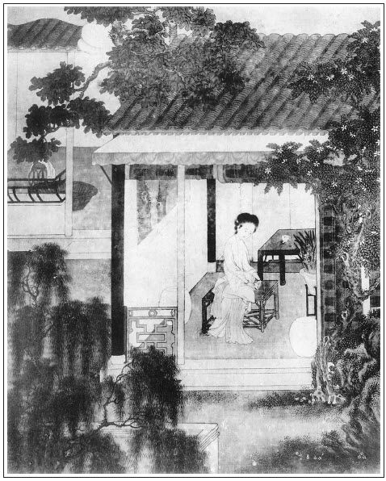

張回上回寫娶玉樓，卻只算才娶來家，才來家第一夜，此回便序金蓮矣。然則費如許力量寫一玉樓，而止拉到家中便罷休，何以謂之情理文字哉？然而接寫玉樓來家，如何宴爾，如何會月娘眾人，想必又是一篇文字，既累筆難寫，又冷落金蓮矣。今看他竟不寫玉樓，而止寫金蓮，然寫金蓮時，卻句句是玉樓文字，何巧滑也。何則？金蓮處冷落，玉樓處自親熱也。玉樓處親熱，觀西門慶之漸疏金蓮處，更可知也。端午別金蓮，到六月初二，將近一月也。此將近一月中做的事，皆是相看玉樓，收拾下禮。然將近一月中，忙此一事，豈無一刻閒工到六姐處哉？今既絕無消息，是未娶之前，已心焉玉樓矣。六月二日既娶玉樓，六月十二即嫁大姐。夫此十天之內，既忙不得工夫走動，十二至廿八，半月以內，又無一刻閒工夫哉？夫無閒，何以至院裡哉？
寫盡西門既娶新人，既難丟玉樓，又因娶玉樓，心中自慚，不好去見金蓮，又恐玉樓看出破綻。一時心事有許多，欲進不前，故金蓮屢促而不至也。則金蓮處一分冷落，是玉樓處一分熱鬧。文字掩映之法，全在一筆是兩筆用也。
六月二日娶玉樓後，才是文嫂來約娶大姐。夫自二日至十二，僅十天，而十天內方說娶，一時便措置一件婚嫁事，且又在娶玉樓之時。一者見西門慶豪富，二者見陳洪勢要，為西門所趨承恐後者也。映後文月娘不堪。
寫床，既入情理，又為春梅回家作線也。
看他寫玉樓簪上兩行詩句，明明是以杏花待玉樓，如我前所言者。益信我不負作者矣。
夫寫玉樓簪子何哉？當看其又寫金蓮簪子，便知寫玉樓簪子。何則？玉樓簪上有詩，金蓮簪上亦有詩。觀金蓮簪上的詩，必以蓮自喻，則知玉樓簪上的杏，明是作者自言命名之意。恐人不知，又以金蓮簪襯出之。則知玉樓之名，信如予言，人自未細心一看耳。
此回內繳過兩件物事，又伏出兩件物事。金蓮撕扇，是收拾過前三番寫的扇子也。不來還我香羅帕之曲，又收拾過王婆所掏出之帕也。如雲被風吹出岫來，既現半日花樣，自然又要風吹散了他。不然搖擺天上，卻何日消繳，何處安放他？至陪大姐一床，與玉樓一簪，又特特為敬濟嚴州一線。而此處又襯玉樓宴爾，西門薄倖，金蓮幾乎被棄，武大險些白死。真小小一物，文人用之，遂能作無數文章，而又寫盡浮薄人情。一時間高興，便將人弄死而奪其妻，不半月，又視如敝屣，另去尋高興處。真是寫盡人情！
看此回寫武二遲了日子，因路—上雨水，方知王婆遇雨，是為武二遲日作地；而武二遲日，蓋又為娶玉樓作地也。不然，武二倘一月便回，或兩月便回，西門一邊忙金蓮之不暇，何暇及王樓哉？不知者謂武二來遲，是為娶金蓮作地，知者謂為娶玉樓作地。然則王婆遇雨，因原為王樓作地，未嘗為武二作地。而前回脫卸玉樓，又不獨以王婆照薛嫂兒也。
燒靈必使「和尚聽淫聲」一段，總是為金蓮妖淫處。隨處生情。沒甚深意，又特為玉樓燒靈一對，愈襯其不堪也。
文嫂兒，蜂也。為敬濟說親時，陳洪正勝．則是將敗未敗之芰荷，故蜂兒猶來。至後文陳定作老僕，是其敗已敗定矣，止餘一芰莖則奈何？故止用薛嫂兒通信息也。
金蓮、王樓之簪已現，後文瓶兒又有壽字簪，且每人皆送一簪，至春梅則有與小玉互相酬答之簪，而西門乃與伯爵同夢簪折，自是細針密線之處。
詞曰：
紅曙卷窗紗，睡起半拖羅袂。何似等閒睡起，到日高還未。催花陣陣玉樓風，樓上人難睡。有了人兒一個，在眼前心裡。

話說西門慶自娶了玉樓在家，燕爾新婚，如膠似漆。又遇陳宅使文嫂兒來通信，六月十二日張夾六月十二日。就要娶大姐過門。西門慶促忙促急攢造不出床來，就把孟玉樓陪來的一張南京描金彩漆拔步床陪了大姐。張夾已與「游舊家池館」作呼吸。三朝九日，足亂了一個多月，不曾往潘金蓮家去。把那婦人每日門兒倚遍，眼兒望穿。使王婆往他門首去尋，門首小廝知道是潘金蓮使來的，多不理他。張夾照後文之熱處。婦人盼的緊，見婆子回了，又叫小女兒街上去尋。那小妮子怎敢入他深宅大院？只在門首踅探，不見西門慶就回來了。來家被婦人噦罵在臉上，怪他沒用，便要叫他跪著。餓到晌午，又不與他飯吃。此時正值三伏天道，婦人害熱，吩咐迎兒熱下水，伺候要洗澡。又做了一籠裹餡肉角兒，等西門慶來吃。身上只著薄紗短衫，坐在小凳上，盼不見西門慶到來，罵了幾句負心賊。無情無緒，用纖手向腳上脫下兩隻紅繡鞋兒來，試打一個相思卦。
正是：
逢人不敢高聲語，暗卜金錢問遠人。
有《山坡羊》為證：
凌波羅襪，天然生下，紅雲染就相思卦。似藕生芽，如蓮卸花，怎生纏得些兒大！柳條兒比來剛半叉。他不念咱，咱何曾不念他！倚著門兒，私下簾兒，悄呀，空叫奴被兒裡叫著他那名兒罵。你怎戀煙花，不來我家！奴眉兒淡淡教誰畫？何處綠楊拴繫馬？他辜負咱，咱何曾辜負他！
婦人打了一回相思卦，不覺睏倦，就歪在床上盹睡著了。約一個時辰醒來，心中正沒好氣。繡旁先點出。迎兒問：「熱了水，娘洗澡也不洗？」婦人就問：「角兒蒸熟了？拿來我看。」迎兒連忙拿到房中。婦人用纖手一數，原做下一扇籠三十個角兒，翻來覆去只數得二十九個，便問：「那一個往那裡去了？」迎兒道：「我並沒看見，只怕娘錯數了。」婦人道：「我親數了兩遍，三十個角兒，要等你爹來吃。你如何偷吃了一個？好嬌態淫婦奴才，繡眉罵婦人之所必罵，故妙。你害饞癆饞痞，心裡要想這個角兒吃！你大碗小碗吃搗不下飯去，我做下孝順你來！」便不由分說，把這小妮子跣剝去身上衣服，拿馬鞭子打了二三十下，打的妮子殺豬般也似叫。問著他：「你不承認，我定打你百數！」打的妮子急了，說道：「娘休打，是我害餓的慌，偷吃了一個。」婦人道：「你偷了，如何賴我錯數？眼看著就是個牢頭禍根淫婦！有那亡八在時，輕學重告，今日往那裡去了？還在我跟前弄神弄鬼！繡眉打罵迎兒，已畫出一腔遷怒；又夾七夾八纏到武大身上，愛想惱怒，一時俱見。我只把你這牢頭淫婦，打下你下截來！」打了一回，穿上小衣，放他起來，吩咐在旁打扇。打了一回扇，口中說道：「賊淫婦，你舒過臉來，等我掐你這皮臉兩下子。」那妮子真個舒著臉，被婦人尖指甲掐了兩道血口子，繡眉歇一晌，又重掐兩下作餘怒，何等播弄，何等想頭。張夾總是淫婦未有不悍者。又是淫婦相思中苦境。才饒了他。
良久，走到鏡台前，從新妝點出來，門簾下站立。張夾簾子十六。也是天假其便，只見玳安夾著氈包，騎著馬，打婦人門首經過。婦人叫住，問他往何處去來。那小廝說話乖覺，常跟西門慶在婦人家行走，婦人常與他些浸潤，以此滑熟。一面下馬來，說道：「俺爹使我送人情，往守備府裡去來。」婦人叫進門來，問道：「你爹家中有甚事，如何一向不來傍個影兒？想必另續上了一個心甜的姊妹了。」玳安道：「俺爹再沒續上姊妹，只是這幾日家中事忙，不得脫身來看六姨。」婦人道：「就是家中有事，那裡丟我恁個半月，音信不送一個兒！只是不放在心兒上。」因問玳安：「有甚麼事？你對我說。」那小廝嘻嘻只是笑，繡旁畫。不肯說。婦人見玳安笑得有因，愈丁緊問道：「端的有甚事？」玳安笑道：「只說有樁事兒罷了，六姨只顧吹毛求疵問怎的？」婦人道：「好小油嘴兒，你不對我說，我就惱你一生。」繡眉問答、語默、惱笑，字字俱從人情微細幽冷處逗出，故活潑如生。小廝道：「我對六姨說，六姨休對爹說是我說的。」婦人道：「我決不對他說。」玳安就如此這般，把家中娶孟玉樓之事，從頭至尾告訴了一遍。這婦人不聽便罷，聽了由不得珠淚兒順著香腮流將下來。玳安慌了，便道：「六姨，你原來這等量窄，我故此不對你說。」婦人倚定門兒，長歎了一口氣，說道：「玳安，你不知道，我與他從前以往那樣恩情，今日如何一旦拋閃了。」止不住紛紛落下淚來。玳安道：「六姨，你何苦如此？家中俺娘也不管著他。」婦人便道：「玳安，你聽告訴：
喬才心邪，不來一月。奴繡鴛衾曠了三十夜。張夾非寫金蓮這邊一月，卻寫玉樓那邊一月也。明眼人自知。他俏心兒別，俺癡心兒呆，不合將人十分熱。常言道容易得來容易捨。興，過也；緣，分也。」
說畢又哭。玳安道：「六姨，你休哭。俺爹怕不也只在這兩日，他生日待來也。你寫幾個字兒，等我替你捎去，與俺爹看了，必然就來。」婦人道：「是必累你，請的他來。到明日，我做雙好鞋與你穿。我這裡也要等他來，與他上壽哩。他若不來，都在你小油嘴身上。」說畢，令迎兒把桌上蒸下的角兒，裝了一碟，打發玳安兒喫茶。一面走入房中，取過一幅花箋，又輕拈玉管，款弄羊毛，須臾，寫了一首《寄生草》。詞曰：
將奴這知心話，付花箋寄與他。想當初結下青絲發，門兒倚遍簾兒下，受了些沒打弄的耽驚怕。你今果是負了奴心，不來還我香羅帕。張夾直接成衣得手，文章巧捷之妙，一至於此。
寫就，疊成一個方勝兒，封停當，付與玳安收了，道：「好歹多上覆他。待他生日，千萬來走走。奴這裡專望。」那玳安吃了點心，婦人又與數十文錢。臨出門上馬，婦人道：「你到家見你爹，就說六姨好不罵你。繡眉語語刺骨。他若不來，你就說六姨到明日坐轎子親自來哩。」張夾即插入「偷娶」正文。玳安道：「六姨，自吃你『賣粉團的撞見了敲板兒蠻子叫冤屈──麻飯胳膽的帳』。」繡眉混語似可解不可解，解來卻妙。說畢，騎馬去了。
那婦人每日長等短等，如石沉大海。七月將盡，到了他生辰。這婦人挨一日似三秋，盼一夜如半夏，張夾又一月矣。等得杳無音信。不覺銀牙暗咬，星眼流波。至晚，只得又叫王婆來，安排酒肉與他吃了，向頭上拔下一根金頭銀簪子與他，央往西門慶家去請他來。王婆道：「這早晚，茶前酒後，他定也不來。待老身明日侵早請他去罷。」婦人道：「乾娘，是必記心，休要忘了！」婆子道：「老身管著那一門兒，繡眉自供出牽頭，妙。肯誤了勾當？」這婆子非錢而不行，得了這根簪子，吃得臉紅紅，歸家去了。且說婦人在房中，香薰鴛被，款剔銀燈，睡不著，短歎長吁。
正是：得多少──
琵琶夜久慇勤弄，張旁已為雪夜一映。寂寞空房不忍彈。
於是獨自彈著琵琶，唱一個《綿搭絮》：
誰想你另有了裙釵，氣的奴似醉如癡，斜倚定幃屏故意兒猜，不明白。怎生丟開？傳書寄柬，你又不來。你若負了奴的恩情，人不為仇天降災。
婦人一夜翻來覆去，不曾睡著。巴到天明，就使迎兒：「過間壁瞧王奶奶請你爹去了不曾？」迎兒去不多時，說：「王奶奶老早就出去了。」
且說那婆子早晨出門，來到西門慶門首探問，都說不知道。在對門牆腳下等夠多時，張夾捱光時，西門慶不在王乾娘牆腳下哉！緩急二字。可笑。只見傅夥計來開舖子。婆子走向前，道了萬福：「動問一聲，大官人在家麼？」傅夥計道：「你老人家尋他怎的？早是問著我，第二個也不知他。大官人昨日壽誕，在家請客，吃了一日酒，到晚拉眾朋友往院裡去了，張夾又影桂姐，且見得有了玉樓，便直欲棄了金蓮，愈慚愈不好去。寫浮浪負心如畫。不然院中覓醉，豈是無暇至金蓮處一走哉？後文瓶兒，亦常自院中回來夜會矣。可想。一夜通沒回家。你往那裡去尋他！」這婆子拜辭，出縣前來到東街口，正往勾欄那條巷去。只見西門慶騎著馬遠遠從東來，兩個小廝跟隨，此時宿酒未醒，醉眼摩娑，前合後仰。被婆子高聲叫道：「大官人，少吃些兒怎的！」向前一把手把馬嚼環扯住。西門慶醉中問道：「你是王乾娘，你來想是六姐尋我？」那婆子向他耳畔低言。道不數句，西門慶道：「小廝來家對我說來，我知道六姐惱我哩，我如今就去。」張夾帶三分慚色。那西門慶一面跟著他，兩個一遞一句，整說了一路話。
比及到婦人門首，婆子先入去，報道：「大娘子恭喜，還虧老身，沒半個時辰，把大官人請將來了。」婦人聽見他來，就像天上掉下來的一般，連忙出房來迎接。西門慶搖著扇兒進來，張夾扇子四現矣。帶酒半酣，與婦人唱喏。婦人還了萬福，說道：「大官人，貴人稀見面！張夾一恨。怎的把奴丟了，一向不來傍個影兒？張夾二恨。家中新娘子陪伴，如膠似漆，張夾三恨。那裡想起奴家來！」西門慶道：「你休聽人胡說，那討什麼新娘子來！因小女出嫁，忙了幾日，不曾得閒工夫來看你。」婦人道：「你還哄我哩！你若不是憐新棄舊，另有別人，你指著旺跳身子說個誓，我方信你。」西門慶道：「我若負了你，生碗來大疔瘡，害三五年黃病，匾擔大蛆叮口袋。」婦人道：「負心的賊！匾擔大蛆叮口袋，管你甚事？」一手向他頭上把一頂新纓子瓦楞帽兒撮下來，望地上只一丟。張旁點明新郎行徑，非單寫金蓮恨也。慌的王婆地下拾起來，替他放在桌上，說道：「大娘子，只怪老身不去請大官人，來就是這般的。」婦人又向他頭上拔下一根簪兒，拿在手裡觀看，卻是一點油金簪兒，上面鈒著兩溜字兒：「金勒馬嘶芳草地，玉樓人醉杏花天。」繡眉沒要沒緊，寫來偏像。張旁此處將玉樓命名之義說明。張夾將簪一點，固是又照玉樓，卻又伏線千里矣。卻是孟玉樓帶來的。婦人猜做那個唱的送他的，奪了放在袖子裡，說道：「你還不變心哩！奴與你的簪兒那裡去了？」西門慶道：「你那根簪子，前日因酒醉跌下馬來，把帽子落了，頭髮散開，尋時就不見了。」婦人將手在向西門慶臉邊彈個響榧子，道：張夾白描。「哥哥兒，你醉的眼恁花了，哄三歲孩兒也不信！」王婆在旁插口道：「大娘子休怪！大官人，他離城四十里見蜜蜂兒刺屎，出門交獺象絆了一交，原來覷遠不覷近。」繡眉專在插科打渾處討趣。西門慶道：「緊自他麻犯人，你又自作耍。」婦人見他手中拿著一把紅骨細灑金、金釘鉸川扇兒，張夾本意即出扇兒，卻又將簪子一閒，此處才出，然卻收拾已前扇子也。取過來迎亮處只一照，原來婦人久慣知風月中事，見扇上多是牙咬的碎眼兒，就疑是那個妙人與他的。不由分說，兩把折了。西門慶救時，已是扯的爛了，說道：「這扇子是我一個朋友卜志道送我的，繡旁直繳上文，何等筆力。張旁直繳上文，何等筆力。一向藏著不曾用，今日才拿了三日，被你扯爛了。」
那婦人奚落了他一回，只見迎兒拿茶來，便叫迎兒放下茶托，與西門慶磕頭。王婆道：「你兩口子聐聒了這半日也夠了，休要誤了勾當。老身廚下收拾去也。」婦人一邊吩咐迎兒，將預先安排下與西門慶上壽的酒餚，整理停當，拿到房中，擺在桌上。婦人向箱中取出與西門慶上壽的物事，用盤盛著，擺在面前，與西門慶觀看。卻是一雙玄色段子鞋；一雙挑線香草邊闌、松竹梅花歲寒三友醬色段子護膝；一條紗綠潞綢、水光絹裡兒紫線帶兒，裡面裝著排草玫瑰花兜肚；一根並頭蓮瓣簪兒。簪兒上鈒著五言四句詩一首，云：「奴有並頭蓮，贈與君關髻。凡事同頭上，切勿輕相棄。」張夾試想此簪亦有詩，卻是為何？明金蓮之為蓮，見玉樓為杏無疑。手寫此處，眼照彼處。西門慶一見滿心歡喜，把婦人一手摟過，親了個嘴，張夾帶愧色。妙絕。說道：「怎知你有如此聰慧！」繡眉寫喜有態，此時若說多謝你等語，便淡而無味。婦人教迎兒執壺斟一杯與西門慶，花枝招揚，插燭也似磕了四個頭。那西門慶連忙拖起來。兩個並肩而坐，交杯換盞飲酒。那王婆陪著吃了幾杯酒，吃的臉紅紅的，告辭回家去了。二人自在取樂玩耍。婦人陪伴西門慶飲酒多時，看看天色晚來，但見：
密雲迷晚岫，暗霧鎖長空。群星與皓月爭輝，綠水共青天同碧。僧投古寺，深林中嚷嚷鴉飛；客奔荒村，閭巷內汪汪犬吠。
當下西門慶吩咐小廝回馬家去，就在婦人家歇了。到晚夕，二人盡力盤桓，淫慾無度。
常言道：樂極生悲。光陰迅速，單表武松自領知縣書禮馱擔，離了清河縣，竟到東京朱太尉處，下了書禮，交割了箱馱。等了幾日，討得回書，領一行人取路回山東而來。去時三四月天氣，回來卻淡暑新秋，路上雨水連綿，遲了日限。張旁方知王婆遇雨之妙。前後往回也有三個月光景。張夾一總前後事。在路上行往坐臥，只覺得神思不安，身心恍惚，繡眉寫相關處慘澹，使人心側。不免先差了一個土兵，預報與知縣相公。又私自寄一封家書與他哥哥武大，說他只在八月內准還。那土兵先下了知縣相公稟帖，然後逕來抓尋武大家。可可天假其便，王婆正在門首。那土兵見武大家門關著，才要叫門，婆子便問：「你是尋誰的？」土兵道：「我是武都頭差來下書與他哥哥。」婆子道：「武大郎不在家，都上墳去了。張夾葫蘆的妙。你有書信，交與我，等他回來，我遞與他，也是一般。」那土兵向前唱了一個喏，便向身邊取出家書來交與王婆，忙忙騎上頭口去了。
這王婆拿著那封書，從後門張夾後門十二。走過婦人家來。原來婦人和西門慶狂了半夜，約睡至飯時還不起來。王婆叫道：「大官人、娘子起來，和你們說話。如今武二差土兵寄書來與他哥哥，說他不久就到。我接下，打發他去了。你們不可遲滯，須要早作長便。」那西門慶不聽萬事皆休，聽了此言，正是：
分門八塊頂梁骨，傾下半桶冰雪來。
慌忙與婦人都起來，穿上衣服，請王婆到房內坐下。取出書來與西門慶看。
書中寫著，不過中秋回家。二人都慌了手腳，說道：「如此怎了？乾娘遮藏我每則個，恩有重報，不敢有忘。我如今二人情深似海，不能相捨。武二那廝回來，便要分散，如何是好？」婆子道：「大官人，有什麼難處之事！我前日已說過，幼嫁由親，後嫁由身。古來叔嫂不通門戶，如今武大已百日來到，大娘子請上幾個和尚，把這靈牌子燒了。趁武二未到家，大官人一頂轎子娶了家去。等武二那廝回來，我自有話說。他敢怎的？自此你二人自在一生，豈不是妙！」西門慶便道：「乾娘說的是。」當日西門慶和婦人用畢早飯，約定八月初六日，張夾又一現惡業。是武大百日，請僧燒靈。初八日晚，娶婦人家去。三人計議已定。不一時，玳安拿馬來接回家，不在話下。
光陰似箭，日月如梭，又早到了八月初六日。西門慶拿了數兩碎銀錢，來婦人家，教王婆報恩寺請了六個僧，在家做水陸，超度武大，晚夕除靈。道人頭五更就挑了經擔來，鋪陳道場，懸掛佛像。王婆伴廚子在灶上安排齋供。西門慶那日就在婦人家歇了。不一時，和尚來到，搖響靈杵，打動鼓鈸，諷誦經懺，宣揚法事，不必細說。
且說潘金蓮怎肯齋戒，陪伴西門慶睡到日頭半天，還不起來。和尚請齋主拈香僉字，證盟禮佛，婦人方才起來梳洗，喬素打扮，來到佛前參拜。眾和尚見了武大這老婆，一個個都迷了佛性禪心，關不住心猿意馬，七顛八倒，酥成一塊。但見：
班首輕狂，念佛號不知顛倒；維摩昏亂，誦經言豈顧高低。燒香行者，推倒花瓶；秉燭頭陀，誤拿香盒。宣盟表白，大宋國錯稱做大唐國；懺罪闍黎，武大郎幾念武大娘。長老心忙，打鼓借拿徒弟手；沙彌情蕩，罄槌敲破老僧頭。從前苦行一時休，萬個金剛降不住。
婦人在佛前燒了香，僉了字，拜禮佛畢，回房去依舊陪伴西門慶。擺上酒席葷腥，自去取樂。西門慶吩咐王婆：「有事你自答應便了，休教他來聒噪六姐。」婆子哈哈笑道：「你兩口兒只管受用，由著老娘和那禿廝纏。」繡旁趣。
且說從和尚見了武大老婆喬模喬樣，多記在心裡。到午齋往寺中歇晌回來，婦人正和西門慶在房裡飲酒作歡。原來婦人臥房與佛堂止隔一道板壁。有一個僧人先到，走在婦人窗下水盆裡洗手，忽聽見婦人在房裡顫聲柔氣，呻呻吟吟，哼哼唧唧，張旁方是金蓮燒靈。恰似有人交姤一般。遂推洗手，立住腳聽。繡旁真賊禿。繡眉燒夫靈可數語而了，卻播出一口有聲有色情境，可見筆墨之妙無窮。但患人思路窘耳！只聽得婦人口裡喘聲呼叫：「達達，你只顧搧打到幾時？只怕和尚來聽見。饒了奴，快些丟了罷！」西門慶道：「你且休慌！我還要在蓋子上燒一下兒哩！」不想都被這禿廝聽了個不亦樂乎。落後眾和尚到齊了，吹打起法事來，一個傳一個，都知婦人有漢子在屋裡，不覺都手之舞之，足之蹈之。臨佛事完滿，晚夕送靈化財出去，婦人又早除了孝髻，登時把靈牌並佛燒了。那賊禿冷眼瞧見，簾子裡一個漢子和婆娘張夾簾兒十七，至此方了簾子。影影綽綽並肩站著，想起白日裡聽見那些勾當，只顧亂打鼓搧鈸不住。被風把長老的僧伽帽刮在地上，露出青旋旋光頭，不去拾，只顧搧鈸打鼓，笑成一塊。繡眉又烘染一筆。王婆便叫道：「師父，紙馬已燒過了，還只顧搧打怎的？」和尚答道：「還有紙爐蓋子上沒燒過。」西門慶聽見，一面令王婆快打發襯錢與他。長老道：「請齋主娘子謝謝。」婦人道：「乾娘說免了罷。」眾和尚道：「不如饒了罷。」一齊笑的去了。正是：
隔牆須有耳，窗外豈無人！
有詩為證：
淫婦燒靈志不平，闍黎竊壁聽淫聲。
果然佛法能消罪，亡者聞之亦慘魂。
文回文禹門云：自此以下皆翻案文字矣。武松縱不能殺西門慶，武植斷不能饒潘金蓮，姦夫淫婦，悻逃法網者，間或有之，姦夫淫婦，白頭偕老者，吾未之前聞。其合也，既不以正，相守也，亦不能常，此當然之理，亦必然之勢也。試觀金蓮之惡，於打迎兒已露其機，慶兒之頑，於娶玉樓已開其漸。以金蓮之惡，配西門之頑，謂其竟能久處也，其孰信之？金蓮不淫殺西門慶，西門亦必淫殺潘金蓮，固不待武都頭之霍霍磨刀也。至於潘金蓮之偷陳，西門慶之再娶李，斯固意中之事，不足為奇。若無其事，方是大奇。蓋兩善或有相濟之時，兩惡決無相容之勢。慎於始者猶不能保其終，出乎爾者反乎爾。
但看此回，有識者早已知其後矣，而無識者未之深思耳，只謂且顧眼前。夫且顧眼〔前〕之人，何可令看《金瓶梅》乎？不但《金瓶梅》不可與看，四書五經而外，是閒書皆不可與看。